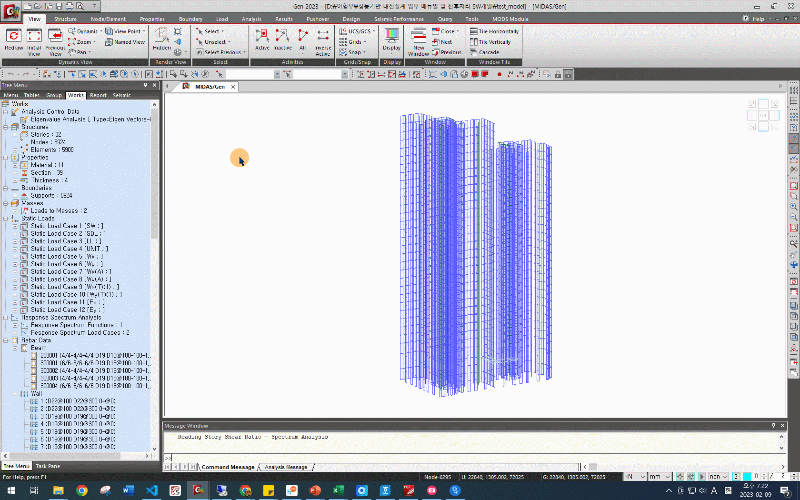

재료 설정#
재료 강도는 Midas Gen에서 Perform-3D로 Import되는 정보가 아니지만, 지진파 산정이나 성능설계 모델과의 비교 검증을 위해 설정해야 합니다.
기대강도#
성능기반 내진설계에 사용되는 모델의 재료에는 기대강도를 적용합니다. 1

콘크리트의 기대강도계수#
콘크리트의 기대강도는 콘크리트 강도에 위의 표의 기대강도계수를 곱하여 산정합니다. 2 그러나 Midas Gen은 기대강도 대신, 기대강도가 반영된 탄성계수를 입력받습니다. 따라서 아래와 같이 기대강도를 반영한 탄성계수를 산정하여 입력합니다. 3
참고
기대강도가 반영된 탄성계수는 Data Conversion Sheets의 Materials 시트에서도 확인할 수 있습니다.
포아송비#
포아송비( \(\nu\) )의 경우, 전단탄성계수( \(G\) )를 구하는 식
를 이용하여 산정할 수 있습니다.
콘크리트의 전단탄성계수는 근사적으로
를 사용하므로 4, 성능기반 내진설계에서는 두 식에 의해 산정되는 포아송비 \(\textbf{0.25}\)를 사용합니다.
What to do
Properties - Material Properties을 클릭합니다. 생성된 창에서 변경할 재료를 선택합니다.
 콘크리트 정보를 직접 입력하기 위해, Standard를 None으로 설정합니다. Modulus of Elasticity에 기대강도를 반영한 탄성계수를 입력합니다. 아래의 그림에서는 C30 콘크리트를 사용하므로, \(E_c = 8500 \sqrt[3]{1.1 \times 30}\)를 계산하여 입력합니다. Poisson’s Ratio에는 0.25를 입력합니다.

Thermal Coefficient와 Weight Density는 기존값을 그대로 사용하거나, 기존값이 없는 경우 각각 Thermal Coefficient에는 \(1.0000e-05 \ 1/[C]\), Weight Density에는 \(2.354e-08 \ kN/mm^3\)을 사용합니다.
OK를 클릭하여 재료 정보 설정을 완료합니다.
위의 방법으로 탄성설계 모델에 사용된 모든 재료의 콘크리트 강도와 포아송비를 변경합니다.